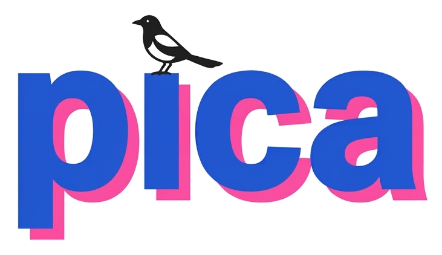
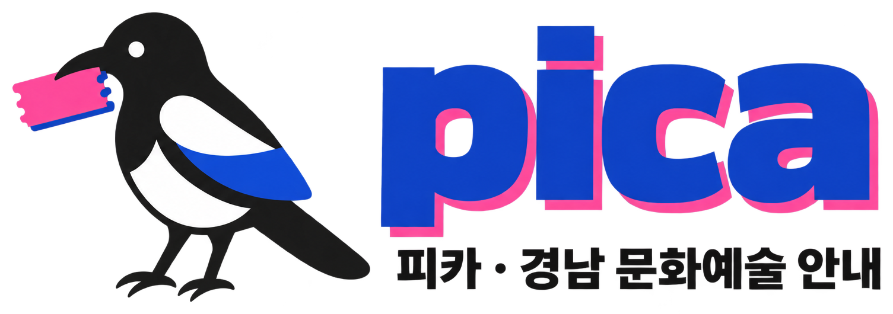
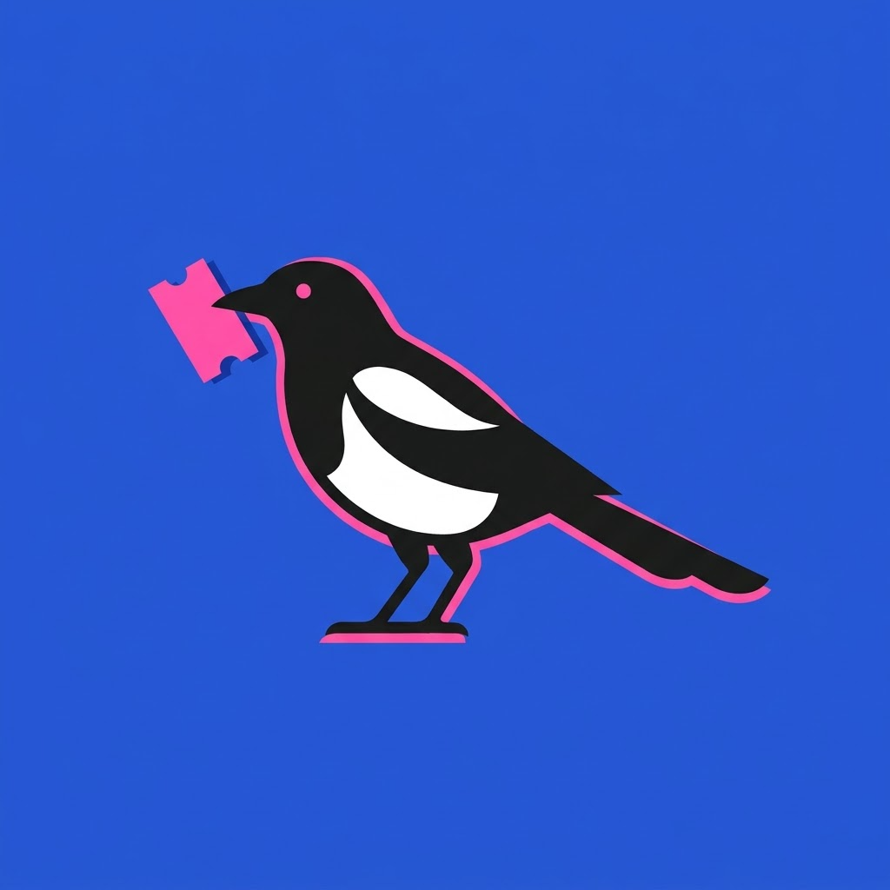

이번 주 경남,
어디 가지?
피카(pica)는 픽아트(pick art — 예술을 골라 추천한다)의 준말입니다. 중소 단체가 만든 행사와 공연이 제대로 알려지지 않는 것이 안타까워 직접 만든 플랫폼입니다. 경남의 공연·전시·축제를 공식 출처로 확인해 날짜순으로 알려 주는 안내 채널입니다. 사이트·인스타그램·유튜브 모두 이 한 장의 규칙을 따릅니다. 자세한 설명은 docs/BRAND_GUIDE.md.
이것만 지키면 된다
컬러
분야 꼬리표 (사이트·카드·릴스 공통)
명암비 (본문 기준 4.5 이상)
금지 분홍 글자 on 신문지 2.6 · 분홍 글자 on 파랑 2.2 · 파랑 글자 on 먹 2.7
그라데이션 · 보라 · 유리 효과 · 회색 그림자 · 망점 패턴도 쓰지 않는다.
글꼴
무료 국악 공연
Black Han Sans (OFL) — 로고·제목·날짜 숫자. 한 화면 2줄 이내. 분홍 어긋난 그림자는 제목·로고에만.
📍 김해서부문화센터 하늬홀
🎟 무료 · 선착순 300석
이번 토요일 오후 3시, 국악 관현악 공연이 있어요.
Pretendard (OFL) — 정보 600 · 본문 400~500 · 출처 500.
로고
까치 심볼 + 워드마크. 분홍 티켓을 문 까치 = "문화 소식을 물어다 주는 새". 아래는 ChatGPT·Gemini(운영자 계정)로 만든 시안이다 — 확정하면 벡터로 다시 그린다.





까치가 티켓을 물고 경남 위를 난다 — 강 위 유등, 바닷가 언덕 골목, 작은 야외 무대와 연주자. 리소 2도 + 먹, 망점 없음. 프로필 고정 게시물·채널 표지·소식지 머리 그림으로 쓴다.
AI 생성 시안이다. 실제 게시용 행사 이미지는 13절대로 공식 포스터·실사만 쓴다.
글자 로고 규칙
여백: 로고 둘레에 p 글자 높이의 절반 이상. 최소: 화면 20px · 인쇄 6mm(그보다 작으면 그림자 뺌). 항상 소문자 pica.
이름은 피카(pica) = 픽아트의 준말. Pica는 까치의 학명 속 이름이라 상징을 까치로 정했다. 계정 @picka.news는 "피카"로 읽혀 그대로 써도 된다.
게시물 예시
국악 공연
11.8(토)
김해서부문화센터
선착순 300석
김해
뭐 하지?
(글자 두지 않음)
캐러셀 5장 순서
| 1 표지 | 2 언제·어디·얼마 | 3 무엇 | 4 가는 법·꿀팁 | 5 저장·공유 |
|---|---|---|---|---|
| 때 + 혜택 하나, 포스터 50% 이상 | 확인 못 한 칸은 칸째 뺀다 | 가서 무엇을 하게 되는지 3줄 | 주차·교통·예약·잔여석 | 태그 요청 + 사이트 + 출처 |
포스터는 손대지 않는다 — 글자 가리기·색 바꾸기·AI 보정 금지. 공공누리 3유형은 자르기·흐림·글자 얹기 금지. 내려 달라는 요청엔 하루 안에.
편성표
오늘 행사는 전날 저녁 게시 + 당일 아침 스토리. 매월 마지막 주엔 "다음 달 경남 미리보기" 릴스. 유튜브 쇼츠는 릴스와 같은 날, 제목 40자 이내 "지역 + 때 + 무엇".
톤앤매너
공연·전시를 자주 다니는 경남 친구가 단톡방에 정리해 주는 말투. 해요체, 짧게, 숫자로.
| 원칙 | 이렇게 | 이렇게 말고 |
|---|---|---|
| 때를 먼저 | 이번 토요일 3시, 김해에서 무료 국악 공연이 있어요. | 김해서부문화센터에서 개최되는 국악 공연을 소개합니다. |
| 숫자로 | 선착순 300석이에요. 30분 일찍 가세요. | 많은 분들이 찾는 인기 공연이에요! |
| 가서 하는 일 | 물레 체험 5,000원, 30분이면 그릇 하나 나와요. | 다양한 체험 프로그램이 마련되어 있습니다. |
| 과장 없이 | 볼 만한 이유는 두 가지예요. | 역대급! 놓치면 후회할 축제!! |
| 모르면 모른다 | 요금은 공지에 없어서 문의가 필요해요. | 아마 무료일 거예요. |
| 정정은 짧게 | 날짜를 잘못 적었어요. 11.8(토)이 맞습니다. | 혼란을 드려 대단히 죄송합니다. 앞으로 더욱 노력하겠습니다. |
쓰지 않는 말: 역대급 · 미쳤다 · 꿀잼 보장 · 놓치면 후회 · ~를 소개합니다 · ~가 마련되어 있습니다 · 다양한 · 풍성한 · 특별한 경험 · 힐링 가득. (예문은 말투 예시이며 실제 행사 정보가 아님)
후킹 문구
훅은 하나만 크게. 물음표는 지역 질문에서만, 느낌표는 쓰지 않는다. 훅이 약속한 것을 본문이 지킨다.
믿고 보는 채널이 되는 법
- 매 게시물에 출처 기관명 + 링크, 캡션 끝에 확인한 날
- 틀리면 지우지 않고 맨 위 [정정] + 스토리
- 월·목 편성을 3개월 이상 빠지지 않는다
- 끝난 행사는 올리지 않는다
- 대가를 받으면 첫 줄에 광고·협찬
- 포스터에 없는 현장 정보(주차·줄·아이 동반)
- 댓글·DM 질문은 24시간 안에, 모르면 기관 연락처
- 주최 기관은 사진 태그 → 기관 스토리 공유로 이어진다
팔로워 0 → 1,000
2026-11-01 현재 게시물 7 · 팔로워 0 · 팔로잉 77. 아래 기간은 목표다. 매주 월요일 지표를 적고 조정한다.
- 프로필 사진·소개 교체
- 하이라이트 3개: pica란? · 이번 주 · 정정
- 첫 9칸 표지 통일
- 지인·기관 담당자 알림
- 월·목 편성 시작
- 모든 게시물 주최 기관 태그
- 기관 공유엔 감사 댓글
- 주 2회 릴스, 지역 질문형·숫자 증거형 번갈아
- 같은 파일로 유튜브 쇼츠
- 잘된 형식 반복
- 공연장·책방·재단과 공동 게시
- 주최 협조 티켓 나눔
- 월간 다음 달 미리보기
하지 않는 것 팔로워 구매 · 맞팔 요청 · 팔로우 후 끊기 · 무단 재게시 · 댓글 홍보 도배.
AI가 만든 것처럼 보이지 않게
- 번역투 빼기: ~에 대해 · ~를 통해 · ~되어진다
- 첫 문장 모양을 매번 바꾼다
- 추상어 대신 고유명사·숫자
- 한 문장 한 정보, 쉼표 줄이기
- 발행 전 humanizer 점검
- AI 생성 이미지·일러스트 쓰지 않음
- 포스터 AI 보정·늘리기 금지
- 공식 포스터 · 권리 확인 사진 · 직접 찍은 사진만
- 표지 틀(로고 위치·여백·글자 크기) 고정
- 편성표 시각에 게시, 새벽 예약 게시 피하기
- 직접 다녀온 곳: 표시 + 직접 찍은 사진 + 한 줄 후기
- 댓글 답은 질문에 맞게, 같은 인사 반복 금지
- 월 1회 운영 일지, 운영자 서명
목표는 속이는 것이 아니라 사람이 확인하고 책임지는 채널로 보이는 것. AI로 초안을 써도 나가는 사실은 사람이 확인한다.
게시 직전 점검
- 날짜·시간·장소·요금을 공식 페이지에서 오늘 다시 확인
- 출처 기관명(표지·마지막 장) + 링크(캡션 끝)
- 가장 큰 글자가 "때"
- 분홍 글자 없음, 팔레트 밖 색 없음
- 포스터를 자르거나 덮거나 색을 바꾸지 않음
- 해시태그 5개, 주최 기관 사진 태그
- 쓰지 않는 말 없음, humanizer 점검
- AI 생성 이미지 없음
- 게시 시각이 편성표와 맞음